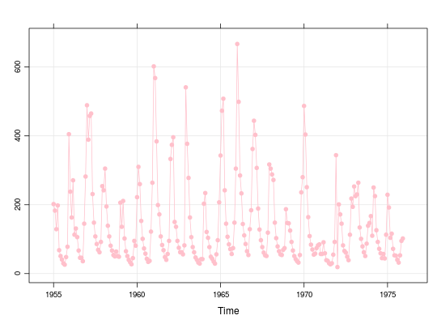
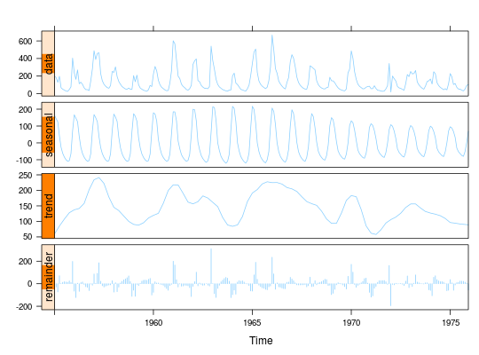

Dados sobre as vazões mensais do rio Paranaíba, na Estação Gamela (Companhia Furnas). A série é referente ao período de Janeiro de 1955 a Dezembro de 1975.
Uma série temporal (classe ts) com 252 observações
mensais de Janeiro de 1955 a Dezembro de 1975.
MORETTIN, TOLOI (2006), Tabela 11.4, pág. 300.
data(MorettinTb11.4) str(MorettinTb11.4)#> Time-Series [1:252] from 1955 to 1976: 202 183 129 198 68 51 41 30 26 48 ...MorettinTb11.4#> Jan Feb Mar Apr May Jun Jul Aug Sep Oct Nov Dec #> 1955 202 183 129 198 68 51 41 30 26 48 78 405 #> 1956 238 163 271 113 131 106 67 46 46 36 145 282 #> 1957 489 389 458 465 231 148 108 86 69 62 92 254 #> 1958 242 305 195 139 108 81 67 54 50 64 51 49 #> 1959 206 136 211 102 65 51 40 33 27 45 95 81 #> 1960 222 310 260 153 101 73 58 43 34 37 122 264 #> 1961 602 568 384 199 172 108 83 68 48 40 57 95 #> 1962 333 374 396 150 136 95 75 62 62 56 82 541 #> 1963 377 278 163 106 77 62 47 40 32 29 42 42 #> 1964 203 234 121 104 77 49 43 35 29 56 97 207 #> 1965 343 473 508 242 145 107 85 71 57 74 148 305 #> 1966 667 499 285 233 144 111 86 65 54 129 184 362 #> 1967 444 403 307 189 128 97 77 61 53 51 119 317 #> 1968 305 288 272 148 103 79 65 56 54 69 74 187 #> 1969 147 146 125 92 67 51 42 36 32 54 236 280 #> 1970 487 404 251 164 109 84 70 55 58 74 82 85 #> 1971 57 57 91 59 39 37 30 27 30 55 92 344 #> 1972 19 201 172 145 82 66 61 49 39 113 218 194 #> 1973 253 225 230 264 134 101 79 62 51 87 139 147 #> 1974 167 110 250 225 126 92 72 59 45 57 44 113 #> 1975 229 192 104 116 72 53 52 40 32 53 95 102# Médias anuais aggregate(MorettinTb11.4, FUN = mean)#> Time Series: #> Start = 1955 #> End = 1975 #> Frequency = 1 #> [1] 121.5833 137.0000 237.5833 117.0833 91.0000 139.7500 202.0000 196.8333 #> [9] 107.9167 104.5833 213.1667 234.9167 187.1667 141.6667 109.0000 160.2500 #> [17] 76.5000 113.2500 147.6667 113.3333 95.0000# Médias mensais tapply(MorettinTb11.4, cycle(MorettinTb11.4), mean)#> 1 2 3 4 5 6 7 8 #> 296.76190 282.76190 246.80952 171.71429 110.23810 81.04762 64.19048 51.33333 #> 9 10 11 12 #> 44.19048 61.38095 109.14286 221.71429# Visualização da série library(lattice) xyplot(MorettinTb11.4, type = c("o", "g"), pch = 19, col = "pink")# Gráfico da decomposição sazonal library(latticeExtra) xyplot(stl(MorettinTb11.4, s.window = 12), col = "skyblue1")